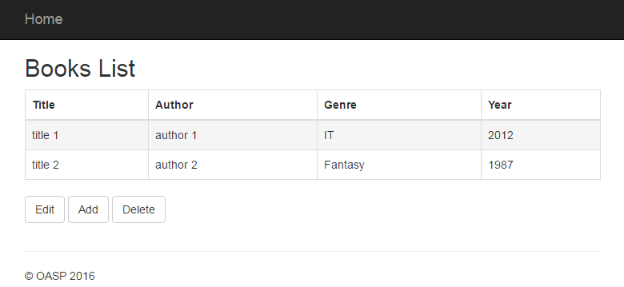
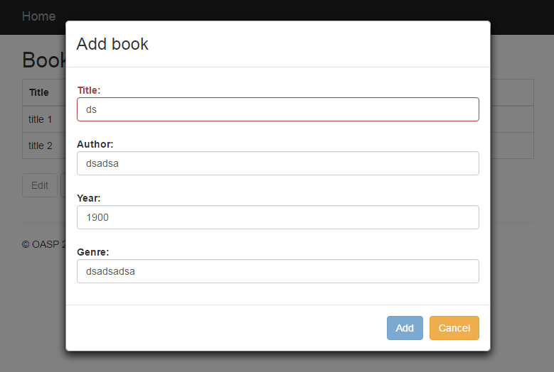
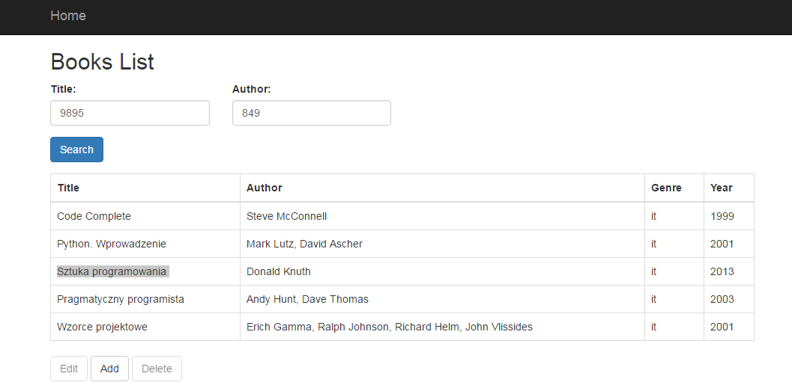

AngularJS Basics

Marek Matczak, Jarosław Fuczko, Tomasz Szewców
Agenda
What is an Angular module?
You can think of a module as a container for the different parts of your app – controllers, services, filters, directives, etc.
Module definition and retrieval
// define a module without dependencies
angular.module('moduleName', []);
// define a module with dependencies
angular.module('moduleName', ['dependency1', 'dependency2']);
// retrieve a module
angular.module('moduleName');
Dependency Injection
Dependency Injection (DI) is a software design pattern that deals with how components get hold of their dependencies.
The Angular injector subsystem is in charge of creating components, resolving their dependencies, and providing them to other components as requested.
Injecting dependencies
angular.module('moduleName').controller('SomeController', function($scope, someService){
'use strict';
// add something to injected $scope
$scope.data = {};
// call injected service method
someService.someMethod();
};
Controller recipe
angular.module('someModule').controller('MyFirstController', function($scope){
'use strict';
$scope.helloWorld = 'hello world!';
alert($scope.helloWorld);
});
<!DOCTYPE html>
<html>
<body>
<section data-ng-controller="MyFirstController">
<h2>Hello from Dialog A!</h2>
</section>
</body>
</html>
Controller recipe - alternative
angular.module('someModule').controller('MyFirstController', function($scope){
'use strict';
var cntl = this;
this.helloWorld = 'hello world!';
alert(this.helloWorld);
});
<!DOCTYPE html>
<html>
<body>
<section data-ng-controller="MyFirstController as cntl">
<h2>Hello from Dialog A!</h2>
<span>{{cntl.helloWorld}}</span>
</section>
</body>
</html>
Service recipe (with service)
angular.module('someModule').service('myService', function(){
'use strict';
this.print = function(){
alert('hello world from a service');
};
});
Service recipe (with factory)
angular.module('someModule').factory('myService2', function(){
'use strict';
var helloWorld = 'hello world from a service2';
return {
print: function(){
alert(helloWorld);
}
};
});
Useful built-in directives
- ngModel - two way binding
- ngBind - one way binding
- ngClick - calling an action
- ngRepeat - repeats the HTML element
- ngClass - applies css classes to a HTML element
- ngDisabled - adds the disabled attribute to a HTML element
- ngShow / ngHide - showing / hiding HTML element
- ngIf - removes or recreates a portion of DOM
Exercise 1
- Implement booksListCntl in the file books-list.controller.js
- add book array to the controller model - it should contain objects with title, author, genre, year properties
- add controller method for storing selected book table row index. It should set selected index to undefined when selected row is selected again
- add controller method for checking if the table row is selected
- Implement books-list.tpl.html template
- add html table into books-list.tpl.html template. Use ngRepeat and ngBind directives to display books in the table
- add three buttons under the table - Edit, Create and Delete
- edit and delete buttons should be disabled when there is no table row selected (ngDisabled directive)
- highlight selected row (css active class) when it is clicked (ngClass and ngClick directives)
Exercise 1 solution mockup
Angular Forms
- decoupled the model and the view
- worries about bidirectional model and view updating
Form example
myForm: { //form name
fistName:{}, //input name
lastName:{}, //input name
email:{} //input name
}
Form validation status
myForm: { //form name
$dirty: false, $pristine: true, //dirty or pristine
$valid: false, $invalid: true, //valid or invalid
fistName: { //input name
$dirty: false, $pristine: true, //dirty or pristine
$valid: false, $invalid: true, //valid or invalid
$error: { //validation for field
required: true, //required validation
minlength: false //minlength validation
}
},
email: {} //input name
}
Exercise 2
- Add ui.bootstrap module dependency to the app.books-management module
- Implement html template for add book modal dialog
- Make all four inputs (author, title, genre, year) required (ngRequired)
- Make author and title inputs valid only when text length >= 3
- Make year input to accept only numbers from 1900 to 2500 (html input type='number' and min / max attributes)
- Add has-error classes when fields are $invalid and $dirty
- Add "Add Book" and "Cancel" buttons - "Add" button is disabled when form is invalid
- Implement controller for modal dialog
- Create form object and connect it with the form in the html template
- Add methods for closing modal dialog ($modalInstance.close on add book button, $modalInstance.dismiss on cancel button)
- Inject $modal service into BooksListCntl controller
- Call $modal.open with correct parameter object on Add button click
Branch with fallback solution when exercise 1 not done: step-2-first-controller
Exercise 2 solution mockup
Exercise 3
- Implement html template for edit modal dialog
- Dialog should work similar to the Add Book dialog - the difference is that the selected book should be passed to the dialog controller (use resolve object)
- Call modal edit dialog on Edit button click
Branch with fallback solution when exercise 2 not done: step-3-forms
Backend communication with $http service
// Simple GET request example:
$http({
method: 'GET',
url: '/someUrl'
}).then(function successCallback(response) {
// this callback will be called asynchronously
// when the response is available
}, function errorCallback(response) {
// called asynchronously if an error occurs
// or server returns response with an error status.
});
// shortcut methods
$http.get('/someUrl', config).then(successCallback, errorCallback);
$http.post('/someUrl', data, config).then(successCallback, errorCallback);
Response object
- data – {string|Object} – The response body transformed with the transform functions.
- status – {number} – HTTP status code of the response.
- headers – {function([headerName])} – Header getter function.
- config – {Object} – The configuration object that was used to generate the request.
- statusText – {string} – HTTP status text of the response.
Exercise 4
- Implement angular service for backend communication - booksData
- booksData service should have the following methods:
- getBooks: $http.get('http://localhost:9000/services/books', {params: searchParams});
- addBook: $http.post('http://localhost:9000/services/book', book);
- updateBook: $http.put('http://localhost:9000/services/book', book);
- deleteBook: $http.delete('http://localhost:9000/services/book/' + id);
- Inject booksData service into controllers in order to support backend communication
- Add search form on top of the book-list dialog
- Hide the table when no results are found (use ngShow / ngHide)
- After clicking search button - pass the search params into booksData get method and copy the results into controller model
- 1st stream - get books from the json file. Other methods should be written, but they won't work due to missing server implementation
Branch with fallback solution when exercise 3 not done: step-4-edit-modal
Exercise 4 solution mockup
Branch with fallback solution after exercise 4:
step-5-backend-communication
Unit testing - tools
- Karma - tool used to spawn a web server which loads your application's source code and executes your tests.
- Jasmine - BDD framework for JavaScript, provides functions to help with structuring tests and making assertions.
Structuring tests
describe('A suite', function() {
it('contains spec with an expectation', function() {
expect(true).toBe(true);
});
});
Karma configuration
// install Karma
npm install karma
// install plugins
npm install karma-jasmine
npm install karma-phantomjs-launcher
npm install karma-chrome-launcher
// run Karma
./node_modules/karma/bin/karma start / init / run
// alternative
npm install -g karma-cli
karma start / init / run
Karma configuration file
// can be created with karma init command
module.exports = function (config) {
config.set({
basePath: '',
frameworks: [],
files: [],
hostname: 'localhost',
port: 9876,
autoWatch: false,
browsers: [],
singleRun: false,
})
};
// for debugging in a browser:
// - set single run to true
// - select other browser
http://karma-runner.github.io/0.8/config/configuration-file.html
Testing a controller
describe('SampleCntl tests', function() {
'use strict';
var $scope;
beforeEach(module('someModule'));
beforeEach(inject(function($controller, $rootScope){
$scope = $rootScope.$new();
$controller('SampleCntl', {$scope: $scope});
}));
describe('some suite', function() {
it('some spec', function() {
// given
// when
$scope.someMethod();
// then
});
});
});
Testing a controller - alternative
describe('SampleCntl tests', function() {
'use strict';
var cntl;
beforeEach(module('someModule'));
beforeEach(inject(function($controller){
cntl = $controller('SampleCntl', {});
}));
describe('some suite', function() {
it('some spec', function() {
// given
// when
cntl.someMethod();
// then
});
});
});
Testing controller with mocks
// sample controller code
angular.module('someModule').controller('SomeCntl', function($scope, $location){
'use strict';
$scope.goToDialog = function(path){
$location.path(path);
}
});
// test code
var $scope, locationMock = {
path: angular.noop
};
beforeEach(inject(function($controller, $rootScope){
$scope = $rootScope.$new();
// injection of mocked $location service
$controller('SomeCntl', {$scope: $scope, $location: locationMock});
}));
Exercise 5
- Add tests for BookListCntl into the book-list.controller.spec.js
- Test all exposed methods
- For methods calling $modal service - add spy and check if spied method was called
- Run tests with gulp test command
- Run tests in debug mode with gulp test:tdd:debug command
Testing a service
describe('data service tests', function () {
'use strict';
var someDataService;
beforeEach(module('app'));
beforeEach(inject(function (_someDataService_) {
someDataService = _someDataService_;
}));
describe('get data method', function () {
it('should return data', function () {
// given
var data = [];
// when
data = someDataService.getData();
// then
expect(data.length).toEqual(10);
});
});
});
Testing service with mocks
// sample service code
angular.module('someModule').factory('serviceUnderTests', function('otherService'){
'use strict';
var data = [];
return {
getData: function(){
angular.copy(otherService.getData(), data);
},
getCurrent: function(){
return data;
}
};
});
// test code
var otherServiceMock = {getData: function(){return [1,2,3]}};
var serviceUnderTests;
beforeEach(function(){
module('someModule');
module(function($provide){
// injecting other service with $provide service
$provide.value('otherService', otherServiceMock);
);
});
beforeEach(function(_serviceUnderTests_){
serviceUnderTests = _serviceUnderTests_;
});
Testing with $httpBackend
var booksData, $httpBackend;
beforeEach(inject(function (_booksData_, _$httpBackend_) {
booksData = _booksData_;
$httpBackend = _$httpBackend_;
}));
afterEach(function () {
// then
$httpBackend.verifyNoOutstandingExpectation();
$httpBackend.verifyNoOutstandingRequest();
});
it('should load books', function () {
// given
var searchParams = {title: 'title', author: 'author'}, books = [], response = [
{id: 0, title: 'title1'},
{id: 1, title: 'title2'}
];
$httpBackend.expectGET('/books-management/books-list/books.json?author=author&title=title').respond(response);
// when
booksData.getBooks(searchParams).then(function (response) {
books = response.data;
});
$httpBackend.flush();
// then
expect(books).toEqual(response);
});
Exercise 6
- Add tests for booksData service in the books-data.service.spec.js
- Test all exposed methods
- Use $httpBackend and remember to call $httpBackend.flush()
- Run tests with gulp test command
- Run tests in debug mode with gulp test:tdd:debug command
Fallback branches for exercies 5 and 6:
step-6-testing-controller
step-7-testing-service